Advanced Caching
Flawless Application Delivery
Trainer Intro
James Tacker
Technology Consultant & Content Developer
Previous Training Work:
Sauce Labs
New Relic
Salesforce
Atlassian
james.tacker@servicerocket.com
Prerequisites/Expectations
Sysadmin, DevOps, Solution Architect
Some familiarity with Web Servers
Some familiarity with Linux
Text Editor: Vim, Vi, Emacs etc.
Some knowledge of Networking
This course is designed for those curious about nginx. Maybe you’re a system administrator or developer.
This course is the first step in your roadmap to understanding the ins and outs of NGINX.
This course assumes you have basic Linux command line knowledge as well as how to use a text editor like vim or nano.a
For those of you using Windows, you’ll want to a Linux OS on a virtual machine of your choosing.
The Training Environment
AWS EC2 Instances
Ubuntu 16.04
Apache 2
Wordpress
NGINX Plus r11
Log Into AWS
If you haven't done so already, please take the time to SSH into your EC2 Instances (Windows users use PuTTY ).
Check your email for the login credentials, check your spam folder!
ssh student<number>@<ec2-server-hostname>
Course Administration
Course Duration: 4 hours
Ask questions at any time!
Agenda
So for this first day we're going to cover a general overview of what NGINX is, then we will explore the web server use case and learn about the configuration file, then we will usetup a proxy server, as well as learn about logging. Eventually we will setup our site to use ssl, and then we will round out the day learning about variables
NGINX Use Cases
Module Objectives
This module enables you to:
Understand RFC Caching Guidelines
Review Basic NGINX Cache Configuration
Debugging the Cache
How Caching Works
Basic Principles
Browser Cache
CDN
Reverse Proxy Cache
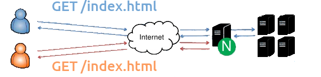
HTTP Cache-Control
Cache-Control
"public"
"private"
"no-cache"
"no-store"
"no-transform"
"must-revalidate"
"proxy-revalidate"
The Cache-Control general-header field is used to specify directive that MUST be honored by all caching mechanisms.
HTTP Headers
Expires: Tue, 6 May 2017 03:18:12 GMT
Cache-Control: public, max-age=60
X-Accel-Expires: 30
Last-Modified: Tue, 29 April 2017 02:28:11 GMT
ETag: "3e74-215-3105fbbc"
Origin server usually declares cacheability of content
Requesting client honors that cacheability, may issue conditional GET requests
Header details:
Expires is the expiration time set by the origin server. Here you can set a date and time down to the second and time zoneCache-Contrl header allows you to specific specific directives to control cache behavior. For example, if a "max-age" directive is present along with an Expires header, the max-age will overrides the Expires. Max-age essentially directive determines the stale age of the content if the current age is greater than the value of max-age at the time of a new request for that specific resource. A use case for using both Expires and Max age is if you want to provide a longer expiration time for HTTP1.1 cache implementations in case an HTTP 1.0 implementation has incorrectly synchronized clocksX-Accel-Expires X-accel utilizes the X-sendfile feature, which allows for internal redirection to a location determined by a header returned from a backend server. Use cases for this allows you to handle authentication, logging, or whatever on the backend, and have NGINX handle serving the content from a redirected location to the end user. We will cover this special header in more detail in the next slideLast Modified entity-header field indicates the date and time at which the origin server believes the content was last modified. This is a highly questionable header field because it relys on the origin erver's interpretation of time and of the content. The best practices are to make sure the origin server obtains the header value as close as possible to the time generated by the Date valueEtag response header fields provide current value of the cached content. It basically adds more validity to the cached content and concurrency control - meaning the same piece of content is updated and checked against this hash value
X-Accel
# When passed URI /protected_files/myfile.pdf
location /protected_files {
internal;
alias /var/www/files/;
}
# Or proxy to another server
location /protected_files {
internal;
proxy_pass http://127.0.0.1:8080/;
}
As stated before x-accel allows for internal redirection to a backend. The feature differs a bit with NGINX, the way it works is it sends the header x-accel.redirect with a URI.
NGINX will then match this URI against location prefixes and regexs, and it will then serve the location that matches the root directory + the URI passed in the header
Special Headers
X-Accel-Redirect X-Accel-Buffering X-Accel-Charset X-Accel-Expires X-Accel-Limit-Rate
X-Accel-Redirect: Sets the URI for NGINX to serve
X-Accel-Buffering: Sets the proxy buffering for this connection. Setting this to “no” will allow unbuffered responses suitable for Comet and HTTP streaming applications. Setting this to “yes” will allow the response to be cached.
X-Accel-Charset: Sets the charset of the file.
X-Accel-Expires: Sets when to expire the file in the internal NGINX cache, if one is used.
X-Accel-Limit-Rate: Sets the rate limit for this single request. Off means unlimited.
Etag
location ~* ^/static/images/$ {
add_header Cache-Control must-revalidate;
etag on;
}
When defining your origin server cache-policies using "must-revalidate", The "Last-Modified" and "ETag" headers are stored along witht he resource so that the client can check later if the resource has changed
In nginx, it's as simple as setting the etag directive to on, then the client will continually check if the content has been modified and if not, a 304 (not modified) will be sent back to the client.
Caching Process Part 1
Client makes request
Request hits NGINX
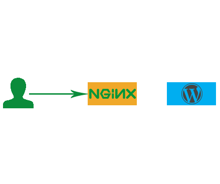
Client makes a request for a page or piece of content
Request hits the NGINX proxy before reaching the application
Caching Process Part 2
NGINX generates hash
NGINX checks if hash exists in memory
If not, then request proceeds to app
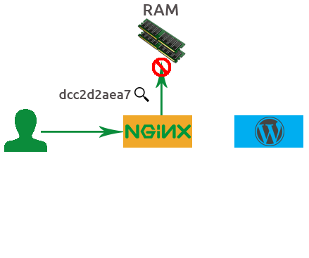
Based on the details from this sample HTTP GET request, NGINX will generate a md5 hash key.
NGINX will then check to see if that hash already exists in memory. If not the request will proceed to the backend application
HTTP Header Details
#Hash Key
dcc2daea797a0dfd7bac7eec4e33a4a
___________________________________
#md5
(http + example.com + /index.php)
#Request
GET /index.php HTTP.1/1
#Headers
User-Agent: curl/7.35.0
Host: example.com
Accept: * / *
#Body
11101001 10101011 000000000 11101010
Caching Process Part 3
App sends response
Hash saved in memory
File saved in file system
The application answers with a response, and that response is saved to the file system
Also, that hash key generated earlier is also saved into memory.
It's best to visualize the hash key value and the file being saved together but in different places. THe file on the file system and the hashing key in memory.
In Memory Details
#In Memory
dcc2daea797a0dfd7bac7eec4e33a4a
#In File System
/tmp/cache/a/a4/daea797a0dfd7bac7eec4e33a4a
Caching Process Part 4
Subsequent request
NGINX checks if hash exists in memory
Hash points to file
Client response sent from cache
Client/User will finally recieve the response and when the client makes a second request to the same URL NGINX will again generate a hash key. If the hashing key arleady exists in memory it will serve the file from the cache.
NGINX Caching Basics
proxy_cache_path proxy_cache proxy_cache_key
proxy_cache_path /data/nginx/cache levels=1:2 keys_zone=my_cache:20m inactive=5m;
server {
proxy_cache_key $scheme$host$request_uri;
proxy_set_header Host $host;
proxy_set_header X-Real-IP $remote_addr;
proxy_set_header X-Forwarded-For $proxy_add_x_forwarded_for;
...
location /application1 {
proxy_cache my_cache;
proxy_cache_valid any 10m;
proxy_pass https://backend.server;
}
}
Cache Instrumentation
add_header X-Cache-Status $upstream_cache_status;
So what does Cache Instrumentation mean? Well, the term instrumentation refers to an ability to monitor or measure the level of a product's performance and to diagnose errors. In this case we're referring to the success of the cache entries and whether or not they're being served to the client
The way we instrument our cache is by using the X-Cache-Status special response header, and use the $upstream_cache_status variable as our value
Some of these values and what they're corresponding meanings regarding nginx are:
MISS - Response not found in cache; got from upstream. Response is then saved to cache
BYPASS - proxy_cache_bypass got response from upstream.
EXPIRED - Entry in cache has expired; we return a fresh content from upstream
STALE - Takes control and serves stale content from cache because upstream is not responding correctly
UPDATING - nginx will serve stale content from cache because cache_lock directive has timed out, and proxy_use_stale directive takes over
REVALIDATED - proxy_cache_revalidate verified that the currently cached content was still valid. Based off of if-modified-since HTTP header
HIT - We serve valid, fresh content directly from cache
Lab 1.0: WordPress DNS Modification
SSH into your backend
Download the WordPress cli (1st command below)
Replace the New-backend-url
Add content as needed via WordPress admin portal (login is admin:admin
$ sudo curl -O https://raw.githubusercontent.com/wp-cli/builds/gh-pages/phar/wp-cli.phar
$ sudo php wp-cli.phar search-replace 'http://ec2-54-205-18-28.compute-1.amazonaws.com' '<New-backend-url>' --path=/var/www/html --skip-columns=guid --allow-root
Lab 1.0: Successful Replace
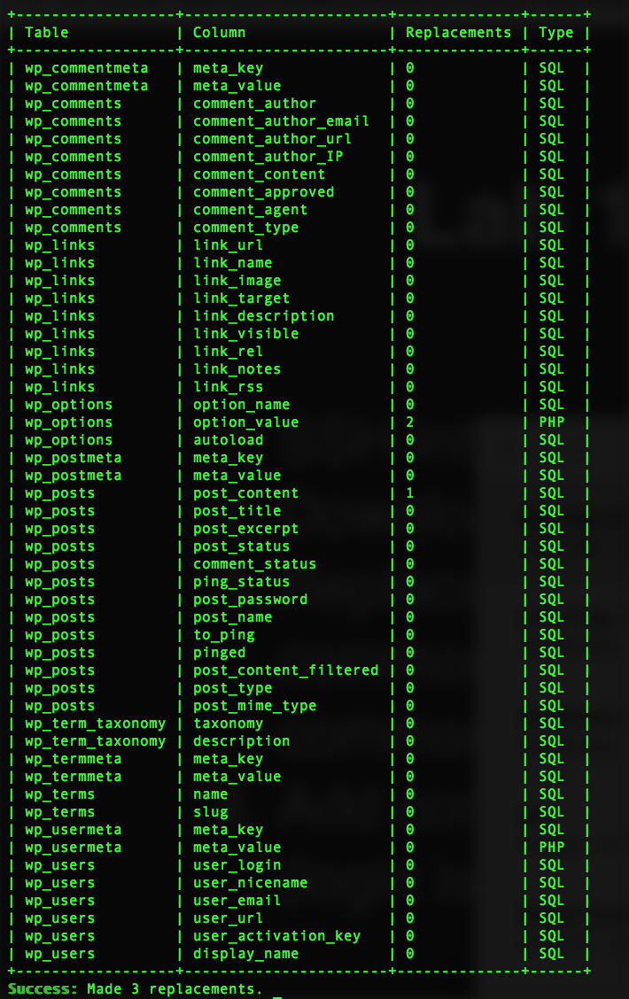
Lab 1.1: Reverse Proxy
SSH into your NGINX Plus Instance
Backup default.conf proxy.conf
$ cd /etc/nginx/conf.d/
$ sudo mv default.conf default.conf.bak
$ sudo vim /etc/nginx/conf.d/proxy.conf
proxy.conf
server {
listen 80;
root /usr/share/nginx/html;
index index.php index.html;
location / {
proxy_pass http://<New-backend-url>/;
}
}
Lab 1.2: Reverse Proxy Cache
Reload and test http://Nginx-frotend-url/
Define a cache path in the http proxy.conf
proxy_cache_path /data/nginx/cache levels=1:2
keys_zone=wordpress_cache:20m inactive=5m;
In the server proxy_cache_key proxy_set_header
proxy_cache_key $scheme$host$request_uri;
proxy_set_header Host $host;
proxy_set_header X-Real-IP $remote_addr;
proxy_set_header X-Forwarded-For $proxy_add_x_forwarded_for;
Lab 1.3: Instrument and Test
Use a map localhost
map $remote_addr $cache_status {
127.0.0.1 $upstream_cache_status;
default "";
}
server {
...
add_header X-Cache-Status $cache_status;
}
Set the proxy_cache proxy_cache_valid 10m
location / {
...
proxy_cache wordpress_cache;
proxy_cache_valid any 10m;
}
Save and reload NGINX. Test using curl -I http://localhost
Full Solution:
proxy_cache_path /data/nginx/cache levels=1:2 keys_zone=wordpress_cache:20m inactive=5m;
map $remote_addr $cache_status {
127.0.0.1 $upstream_cache_status;
default "";
}
server {
listen 80;
root /var/wwwl/html;
index index.php index.html;
proxy_cache_key $scheme$host$request_uri;
proxy_set_header Host $host;
proxy_set_header X-Real-IP $remote_addr;
proxy_set_header X-Forwarded-For $proxy_add_x_forwarded_for;
add_header X-Cache-Status $cache_status;
location / {
proxy_cache wordpress_cache;
proxy_cache_valid any 10s;
proxy_pass http://127.0.0.1:8080/;
}
}
NGINX Cache Types
The basic behavior of NGINX is to cache all GET and HEAD request methods that are indicated by the orign server as cacheable
If those headers possess a Set-Cookie header, nginx won't cache the content because Set-Cookie usually includes some sort of unique data specific for each request.
NGINX identifies which resources to cache by a particular key value, either a raw URL like www.myexample.com, or by predefined variables assigned in the proxy_cache_key directive such as $scheme$host$request_uri
Alternative Caches
FastCGI
Memcache
uwsgi and SCGI
fastcgi functions much like an http cache, like for example if you want to cache all of your processed php files to disk
for memcache, you can retrieve content from a memcached server - assuming it's prepopulated with content)
And NGINX also has proxy_pss equivalents for other protocols such as uwsgi and SCGI
Lab 2.0 Status Page
Create a new conf called status.conf
status.conf
server {
listen 9090;
root /usr/share/nginx/html;
location = /status {
status;
}
}
Add the status_zone proxy.conf
server {
...
status_zone wordpress_proxy;
}
Save, reload, then visit status.html
Full Solution:
proxy_cache_path /data/nginx/cache levels=1:2 keys_zone=img_cache:20m inactive=5m;
…
proxy_cache_key $scheme$host$request_uri;
proxy_set_header Host $host;
proxy_set_header X-Real-IP $remote_addr;
proxy_set_header X-Forwarded-For $proxy_add_x_forwarded_for;
...
location /application1 {
proxy_cache img_cache;
proxy_cache_valid 10m;
proxy_pass http://localhost:90/sampleApp;
Selective Caching
Separate Cache Placement through keys and regex
# Define caches and their locations
proxy_cache_path /mnt/ssd/cache keys_zone=ssd_cache:10m levels=1:2 inactive=600s
max_size=700m;
proxy_cache_path /mnt/disk/cache keys_zone=disk_cache:100m levels=1:2 inactive=24h
max_size=80G;
# Requests for .mp4 and .avi files go to disk_cache
# All other requests go to ssd_cache
map $request_uri $cache {
~\.mp4(\?.*)?$ disk_cache;
~\.avi(\?.*)?$ disk_cache;
default ssd_cache;
}
server {
# select the cache based on the URI
proxy_cache $cache;
...
}
NGINX can manage multiple cache locations, each mapped to a different filesystem location, and you can configure NGINX to choose which cache to use on a per-request basis.
In the following sample configuration, the proxy_cache_path directives create two caches, ssd_cache and disk_cache, mounted on the local directories /mnt/ssd/cache and /mnt/disk/cache respectively. The map directive inspects the request URL and selects disk_cache for all requests that appear to be video downloads (have .mp4 or .avi in the URL). The default ssd_cache location is selected for all other requests.
Note: For a simple deployment, you could create separate location blocks for different URLs and use the proxy_cache directive within each to specify a different cache location.
Later in the course we will talk about Cache Placement Strategies and some of he uses caes for each
Debugging the Cache
The cache server
http {
...
server {
error_log /path2/to/log debug;
...
}
}
The connection from the load balancer
...
events {
debug_connection 192.168.1.1;
debug_connection 192.168.10.0/24;
}
Must have the debug module compiled from source
There are various options on how to correctly log debug connections and debug log levels because they take up a lot of overhead due to the detailed output. For more detailed information, as well as how to perform a core dump, check the documentation link provided in this slide.
Basically, the idea here is you can debug the log of the cache server for connections received. Or you can debug incoming connections, typically the load balancer to see if there's something lost in translation.
Extended Status
Leverage the status module to view cache stats
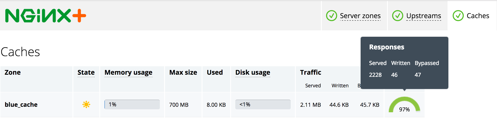
Lab 2.1: Load Generator
Open a new shell on your local computer. Don't perform the test on the same machine i.e. your ec2 instance
Ensure you have ab
$ ab -V
This is ApacheBench, Version 2.3 <$Revision: 1757674 $>
Copyright 1996 Adam Twiss, Zeus Technology Ltd, http://www.zeustech.net/
Licensed to The Apache Software Foundation, http://www.apache.org/
Installation steps here , or use homebrew
$ -e "$(curl -fsSL https://raw.githubusercontent.com/Homebrew/install/master/install)"
$ brew tap homebrew/dupes
$ brew install homebrew/dupes/ab
If necessary, you may have to rehash path to your shell
Lab 2.2: Perform Benchmark Test
Test WordPress server directly (no NGINX) using ab
ab -c 10 -t 30 -k http://wordpress-backend-url/;
Comment out all proxy_cache proxy.conf
Test the NGINX Proxy (without caching)
ab -c 10 -t 30 -k http://frontend-nginx-url/;
Compare the results, then enable caching and re-test
ab -c 10 -t 30 -k http://frontend-nginx-url/;
Module Objectives
This module enables you to:
Identify where cache data is stored
Modify location (external disc, tmpfs etc.)
Purge cache entries
Load instrumented cache data
Persistent Cache
NGINX uses a persistent disk-based cache
Options:
Load cache data at startup
Prune the cache over time
Manually purge content entries
The content cache is stored on disk in a persistent cache, NGINX works in conjunction with the OS to swap that disk cache into memory, providing hints to the OS page cache as to what content should be stored in memory. This means that when we need to serve content from the cache, we can do so extremely quickly.
The cache metadata information about what is there and its expiration time, is stored separately in a shared memory zone across all the NGINX processes and is always present in memory. So NGINX can query the cache, search the cache, extremely fast; it only needs to go to the page cache when it needs to pull the response and serve it back to the end user.
This gives us the flexibility to look at how the persistenc cache is loaded on startup, how we can prune content in particular situation, or even purge entire cache entries if we want to be absolutely sure the client gets the most updated version.
Identifying Location
Set content path
proxy_cache_path /var/cache/nginx keys_zone=one:10m levels=1:2 max_size=40m;
Define cache key
proxy_cache_key $scheme$host$request_uri;
Get the content into the cache, then check md5
$ echo -n "httplocalhost:8080/index.html" | md5sum
6d91blec887b7965d6a926cff19379ba -
Verify presence of content
cat /var/cache/nginx/4/9b/6d91blec887b7965d6a926cff19379ba
Now let's do a quick mental test to see if we remember how NGINX stores both it's content cached data, and the in memory metadata?
The content cache location is declared using a directive called proxy_cache_path— which specifies the number of parameters: where the cache is stored on your file system, the name of the cache, the size of the cache in memory for the metadata, and the size of the cache on disk. In this case there’s a 40 MB cache on disk.
The key to understanding where the content is stored is understanding the cache key – the unique identifier that NGINX assigns to each cacheable resource. By default that identifier is built up from the basic parameters of the request: the scheme, Host header, the URI, and any string arguments.
You can extend that if you want using things like cookie values or authentication headers or even values that you’ve calculated at runtime. Maybe you want to store different versions for users in the UK than for users in the US. This all possible by configuring the proxy_cache_key directive.
When NGINX handles a request, it will calculate the proxy_cache_key and from that value, then it will then calculate an MD5 sum. You can replicate that yourself using the command line example I’ve shown here. We take the cache key httplocalhost:8080/index.html and pump that through md5sum. Be careful, when you’re doing this from the shell, not to pump a new line through as well.
That will calculate the MD5 hash value that corresponds to that cacheable content. NGINX uses that hash value to calculate the location on disk that content should be stored. You’ll see in the proxy_cache_path that we specify a two‑level cache with a one‑character and then a two‑character directory. We pull those characters off the end of the string to create a directory called 4 and subdirectory called 9b, and then we drop the content of the cache (plus the headers and a small amount of metadata) into a file on disk.
You can test the content caching. You can print out the cache key as one of the response headers, you can pump it through md5sum to calculate the hash correspondence of that value. Then you can inspect the value on disk to see it’s really there and the headers that NGINX cached, to understand how this all fits together.
Lab 3: Map Files to Disc
Map content to disc by using echo curl
$ echo -n "httplocalhost/" | md5sum
$ curl -I http://localhost/
Verify the content is now in the cache directory
$ cat /data/nginx/cache/<last 3>/<char of>/<md5 string>
#example
$ cd /data/nginx/cache/5/46/
$ ls
f7fbc9561a3975ce1ecff55583e50465
Restart NGINX
$ nginx -s reload
Run sudo chmod -R 777 if you can't enter the directory
Load Previous Instrumentation
proxy_cache_path /data/nginx/cache keys_zone=one:10m
loader_files=100;
loader_threshold=200
loader_sleeps=50;
Loads files in blocks of 100
Takes no longer than 200ms
Pauses for 50ms, then repeats
Now that content is stored on disk and is persistent, when NGINX starts it needs to load that content into memory – or rather, it needs to work its way through that disk cache, extract the metadata, and then load the metadata into memory in the shared memory segment used by each of the worker processes. This is done using a process called the cache loader.
A cache loader spins up at startup and runs once, loading metadata onto disk in small chunks: 100 files at a time, sandboxed to 200 ms, and then pausing for 50 ms in between, and then repeating until it’s worked its way through the entire cache and populated the shared memory segment.
The cache loader then exits and doesn’t need to run again unless NGINX is restarted or reconfigured and the shared memory segment needs to be reinitialized.
You can tune the operation of the cache loader, which may be appropriate if you have very fast disks and a light load. You can make it run faster or perhaps you might want to wind it back a little bit if you’re storing a cache with a huge number of files and slow disks and you don’t want the cache loader to use excessive amounts of CPU when NGINX starts up.
Pruning the Cache
The Cache Manager is a background process that operates based on:
inactive max_size
proxy_cache_path /path/to/cache keys_zone=name:size levels=1:2
inactive=time
max_size=size;
Once the cache is in memory and files are stored on disk, there’s a risk that cached files that are never accessed may hang around forever. NGINX will store them the first time it sees them, but if there are no more requests for a file, then [the file] will just sit there on disk until something comes along and cleans it out.
This something is the cache manager; it runs periodically, purging files from the disk that haven’t been accessed within a certain period of time, and it deletes files if the cache is too big and has overflowed its declared size. It deletes them in a least‑recently‑used fashion. You can configure this operation using parameters to the proxy_cache_path [directive], just as you configure the cache loader:
The inactive time defaults to 10 minutes.
The max-size parameter has no default limit. If you impose a max‑size limit on the cache, at times it may exceed that limit but when the cache manager runs it will then prune the least recently used files to take it back underneath that limit.
Lab 4.1: Load Cache Data
Stop Nginx by running:
$ nginx -s stopUse the loader_files loader_threshold
proxy_cache_path /data/nginx/cache levels=1:2 keys_zone=wordpress_cache:20m
inactive=5m loader_files=100 loader_threshold=200;
Restart NGINX
$ nginx -s reloadCheck cache capacity in the status.html
Run a curl HIT
Mounting to tmpfs
Create a mount point
$ mount -t tmpfs -o size=2G tmpfs /var/cache/nginx
Match the cache directory in proxy_cache_path fastcgi_cache_path
http {
proxy_cache_path /var/cache/nginx levels=1:2 keys_zone=one:10m;
fastcgi_cache_path /var/cache/nginx levels=1:2 keys_zone=one:10m;
...
}
Test the RAM directory
$ df -ah | grep tmpfs
tmpfs 2.0G 29M 1996M 1% /var/cache/nginx
Not recommended by support team!
It is possible to cache to tmpfs – a transient in-memory filesystem – but that brings some challenges, beyond the obvious lack of persistence across reboots.
tmpfs filesystems are by necessity small because they are limited by the available RAM. NGINX can overfill the cache, because the worker processes add new resources to the cache, and the cache manager process then prunes the cache in the background to maintain the configured max_size. Therefore, it’s necessary to allow for spare capacity when sizing a cache, and this can be wasteful on a small cache file system.
Furthermore, tmpfs filesystems are swapped out to disk when memory is constrained. The memory used by a tmpfs cache could just as effectively be used by the page cache for a larger on-disk cache.
Here are the commands to a). partition your tmpfs to serve nginx cache data, b) reference that directory on disc using proxy_cache_path, c). test the RAM partition to see that is indeed serving and storing data from that temp filesystem
proxy_cache_purge Allows you to remove full cache entries that match a configured value.
server {
proxy_cache myCache;
proxy_pass http://localhost:8081;
proxy_cache_purge $purge_method;
}
One side effect of caching content is that content updates may not terminate the existing content in a client’s browser.
proxy_cache_purge allows you to remove full cache entries that match a configured value.
Syntax: proxy_cache_purge "string"
Purge Methods
Partial Purge
use curl PURGE HTTP map
Full Purge
turn purger proxy_cache_path
Partial Purge: The map directive stores the PURGE HTTP request, then references the request method in a specific caching location.
Full Purge: In addition to purging the specific location, by enabling purger=on all files matching the wildcard key (*) are completely removed from cache.
HTTP PURGE Example
Request:
$ curl –X PURGE –D – “http://www.mysite.com"
# setting the default purge method will only delete matching URLs.
map $request_method $purge_method {
PURGE 1;
default 0;
}
server {
listen 80;
server_name www.mysite.com
proxy_cache myCache;
proxy_pass http://localhost:8081;
proxy_cache_purge $purge_method;
}
purger Request:
$ curl –X PURGE –D – “http://www.mysite.com/*"
proxy_cache_path /data/nginx/cache levels=1:2 keys=myCache:10m purger=on;
server {
listen 80;
server_name www.mysite.com;
location / {
proxy_cache_purge $purge_method;
}
}
Lab 4.2: Configure Cache Purge
Open proxy.conf map
map $request_method $purge_method {
default 0;
PURGE 1;
}
Specify the proxy_cache_purge
location / {
proxy_cache_purge $purge_method;
...
proxy_cache wordpress_cache;
}
Save and reload NGINX
Send the curl PURGE
$ curl –X PURGE –I http://localhost/
Solution:
proxy_cache_path /data/nginx/cache2 levels=1:2 keys_zone=upstreamCache:10m max_size=60m inactive=60m;
map $request_method $purge_method {
default 0;
PURGE 1;
}
server {
…
location / {
proxy_cache wordpress_cache;
proxy_cache_valid 10s;
proxy_cache_purge $purge_method;
proxy_pass http://127.0.0.1/;
Note: Successful PURGE will result in a HTTP 204 code
exprires
Expires Cache-Control
map $sent_http_content_type $expires {
default off;
application/pdf 42d;
~image/ max;
css/javascript modified +24h;
text/html epoch;
}
expires $expires;
Enables or disables adding or modifying the “Expires” and “Cache-Control” response header fields provided that the response code equals 200, 201, 204, 206, 301, 302, 303, 304, or 307. The parameter can be a positive or negative time.
The time in the “Expires” field is computed as a sum of the current time and time specified in the directive. If the modified parameter is used then the time is computed as the sum of the file’s modification time (Last-Modified) and the time specified in the directive.
In addition, it is possible to specify a time of day using the “@” prefix. e.g.
expires @15h30m The epoch parameter refers to the absolute time - meaning day, time, and year stamp. In other words you're deferring to what's stated in the
Cache-Control max-age Sometimes you will see the
expires
Module Objectives
This module enables you to:
Interpret and modify headers
Configure caching resources
Bypass cache tier
Header Interpretation
Example 1
location /images/ {
proxy_cache my_cache;
proxy_ignore_headers Cache-Control;
proxy_cache_valid any 30m;
...
}
Example 2
location /images/ {
proxy_cache my_cache;
add_header Cache-Control public;
...
}
Using proxy_ignore_headers, you can instruct NGINX to either ignore the Cache-Control header for everything under a specific prefix. Which will require you to enforce your own expirtation policies via proxy_cache_valid.
Or you can choose to set the Cache-Control headers to public via the add_header directive. This essentially allows any system to cache proxied responses, rather than just the client's browser. And it also owners the additional header information passed from the origin server such as max-age.
This is useful if you have an external cache server like memcache to store on an external disc, or if you want to rely on the origin server for what's cacheable vs. what's not
Beware about the add_header configuration pitfall! the add_header directive inherits directives from the previous level, and only if there are no add_headers at the current level
Caching Resources
Directives that control cached responses:
proxy_cache_min_uses proxy_cache_methods
Caching limit rates:
proxy_cache_bypass proxy_no_cache
proxy_cache_min_uses
server {
proxy_cache myCache;
proxy_pass http://localhost:8081;
proxy_cache_min_uses 5;
}
Proxy_cache_min_uses sets the number of times an item must be requested by clients before NGINX caches it.
By default proxy_cache_min_uses is set to 1.
Further requests are evicted from cache when not accessed within the timeout duration or when max_size upper limit is reached.
This directive counts the number of requests after which the response from the upstream is cached.
This directive is useful if you have a lot of concurrent requests and you don’t want to cache every response or if your cache is constantly hitting it’s upper limits and you want to regulate the most frequently accessed items.
proxy_cache_methods Syntax:
proxy_cache_methods $request_method
map $request_method $cache_method {
default 0;
GET 1;
POST 1;
HEAD 1;
PUT 0;
}
server {
proxy_cache_methods $cache_method;
proxy_cache my_cache;
proxy_cache valid any 4s;
proxy_pass http://localhost:8080/;
}
proxy_cache_bypass
proxy_cache_bypass $cookie_nocache $http_pragma $http_authroization;
This directive defines conditions where NGINX Plus does not send cached data to the client.
Each parameter defines a condition and consists of a number of variables. If at least one parameter is not empty and does not equal “0” (zero), NGINX Plus does not look up the response in the cache, but instead forwards the request to the backend server immediately.
Popular use cases for this directive include http_auth headers, and secure data that should always be the most up to date when a client makes a request
proxy_cache_no_cache Syntax:
proxy_no_cache $arg$arg_comment
map $request_uri $no_cache;
/default 0;
/test 1;
server {
proxy_cache_methods GET HEAD POST;
proxy_cache my_cache;
proxy_cache_valid any 10m;
proxy_no_cache $no_cache;
proxy_pass http://localhost:8080/;
}
Similar to the proxy_cache_bypass directive, we can define parameters where under no situation should any content be cached given the proxy_no_cache directive is present
here in this use case we're storing request_uri where we don't want to cache responses. This configuration assumes that the $request_uri is part of the caching key, so when a subsequent or new request is made for '/test' the responses won't be cached
proxy_cache_use_stale
location / {
...
proxy_cache_use_stale error timeout http_500 http_502 http_503 http_504;
}
Let's say there's a scenario where you're origin server is down, but rather than serve a 500 code error page , you want to continue to serve outdated content to the client for a period of time.
Using the proxy_cache_use_stale directive we can provide an extra level of fault tolerance, for the servers that NGINX is proxying, and ensure uptime in the case of server failures or traffic spikes.
Here in this example, if NGINX receives an error, timeout, or any equivalent response from the backend server, and as long as there is a stale cache entry for the request key stored on the NGINX box, NGINX will relay the cached file to the content rather than an error page.
proxy_cache_revalidate
location / {
proxy_cache my_cache;
proxy_cache_min_uses 3;
proxy_cache_use_stale error http_500 http_503 http_502;
proxy_cache_revalidate on;
proxy_pass http://myUpstream/;
}
proxy_cache_revalidate instructs NGINX to use conditional GET requests when refreshing content from the origin servers.
If a client requests an item that is cached but expired as defined by the cache control headers, NGINX includes the If‑Modified‑Since field in the header of the GET request it sends to the origin server.
This saves on bandwidth, because the server sends the full item only if it has been modified since the time recorded in the Last‑Modified header attached to the file when NGINX originally cached it.
proxy_cache_lock
location / {
proxy_cache my_cache;
proxy_cache_min_uses 3;
proxy_cache_use_stale error http_500 http_503 http_502;
proxy_cache_revalidate on;
proxy_cache_lock on;
proxy_pass http://myUpstream/;
}
With proxy_cache_lock enabled, if multiple clients request a file that is not current in the cache (basically a MISS X-Proxy-Cache status), only the first of those requests is allowed through to the origin server.
The remaining requests wait for a response to appear in the cache or the cache lock for the request element to be released. This is key to avoid cache lock contention
SwR/SiE
Origin Servers
Cache-Control: max-age=3600 stale-while-revalidate=120 stale-if-error=900
NGINX Servers
proxy_cache_path /path/to/cache levels=1:2 keys_zone=my_cache:10m
max_size=10g inactive=60m use_temp_path=off;
server {
# ...
location / {
proxy_cache my_cache;
proxy_cache_use_stale updating;
proxy_cache_background_update on;
proxy_pass http://my_upstream;
}
}
stale‑while‑revalidate stale‑if‑error
proxy_cache_path /path/to/cache levels=1:2 keys_zone=my_cache:10m max_size=10g inactive=60m use_temp_path=off;
server {
# ...
location / {
proxy_cache my_cache;
# Serve stale content when updating
proxy_cache_use_stale updating;
# In addition, don’t block the first request that triggers the update
# and do the update in the background
proxy_cache_background_update on;
proxy_pass http://my_upstream;
}
}
Cache-Control Review
proxy_cache_valid proxy_cache_bypass proxy_no_cache Cache-Control public
By adding the 'public' Cache-Contrl header, we're allowing any system to cache entries. Setting them to private would limit them to being cached by private caches, such as our browser.
Lab 5.1: Set Cache Params
Create a separate conf file called cache.params.conf
Transfer all cache details at server http
proxy_cache_path /data/nginx/cache levels=1:2 keys_zone=wordpress_cache:20m inactive=5m loader_files=100 loader_threshold=200;
map $remote_addr $cache_status {
127.0.0.1 $upstream_cache_status;
default "";
}
map $request_method $purge_method {
default 0;
PURGE 1;
}
proxy_cache_key $scheme$host$request_uri;
proxy_set_header Host $host;
proxy_set_header X-Real-IP $remote_addr;
proxy_set_header X-Forwarded-For $proxy_add_x_forwarded_for;
add_header X-Cache-Status $cache_status;
Lab 5.2: Set Reference Cache Params
Add one map $status $do_not_cache $content_type $expires
Open proxy.conf
proxy_cache_bypass $do_not_cache;
proxy_cache_methods GET HEAD POST;
expires $expires;
Full Config
proxy_cache_path /data/nginx/cache levels=1:2 keys_zone=wordpress_cache:20m inactive=5m loader_files=100 loader_threshold=200;
map $remote_addr $cache_status {
127.0.0.1 $upstream_cache_status;
default "";
}
map $request_method $purge_method {
default 0;
PURGE 1;
}
map $content_type $expires {
default off;
application/pdf 10m;
~image/ max;
css/javascript 10m;
text/html epoch;
}
map $status $do_not_cache {
400 1;
403 1;
500 1;
502 1;
504 1;
default 0;
}
proxy_cache_key $scheme$host$request_uri;
proxy_set_header Host $host;
proxy_set_header X-Real-IP $remote_addr;
proxy_set_header X-Forwarded-For $proxy_add_x_forwarded_for;
add_header X-Cache-Status $cache_status;
Module Objectives
This module enables you to:
Enable microcaching
Create and Deploy Cache Placement Strategies
Optimize read and write operations
Create high-capacity/highly-available caches
Microcaching
Benefits:
Improves web performance
Reduces load on origin servers
Drawbacks:
Depends on cacheability of content
Spike on origin server after entry expires
Microcaching is a techqunie where the content is cached for a very short period of time, as little as 1 second. This means that updates to the site are delayed by no more than a second, which in many cases is perfectly acceptable.
Microcaching Scenarios
Front page of busy blog or news site
RSS feed of recent information
Status page of a CI build platform
Calendar data
Personalized dynamic content on client side
Deciding what should be microcached and when is key with microcaching. Typically caching static content like .html files and images is a given, but it's also a relatively straightforward process. It might be more beneficial to cache this content for a longer duration because it's least likely to change.
However when it gets to caching personalized content (that is, content customized for each user by the server application), or dynamic content, things get trickier
Generally, caching personalized content is impossible because the server's response to each request for the same resource is different per user. Techniquies such as server side include and edge side includes can help with page assembly, but the performance imporvement isn't gauranteed or is negligble
However dynamic content, that is content that can change unpredictably but isn't personalized for each user can be cached and SHOULD be cached. Sometimes this content is extremely expensive to generate and serving an outdated version can cause a range of problems
Examples of dynamic content suitable for caching include: (read the list)
Microcaching Example
proxy_cache_path /tmp/cache keys_zone=cache:10m levels=1:2 inactive=600s max_size=100m;
server {
listen external-ip:80; # External IP address
proxy_cache cache;
proxy_cace_valid 200 1s;
status_zone wordpress; # NGINX Plus status monitoring
location / {
proxy_http_version 1.1; # Always upgrade to HTTP/1.1
proxy_set_header Connection ""; # Enable keepalives
proxy_set_header Accept-Encoding ""; # Optimize encoding
proxy_pass http://wordpress-upstreams;
}
}
upstream wordpress-upstreams {
zone wordpress 128k;
keepalive 20; # Keepalive pool to upstream
server localhost:80;
}
Lab 6.1 Microcaching
Open proxy.conf proxy_cache_valid 1s
Save and reload NGINX, and re-run your ab
ab -c 10 -t 30 -k http://frontend-nginx-url/;
Take a look at the status dashboard
There should be increase in connections received, but also notice the spike in 3xx codes every so often?
Lab 6.2 Microcaching
Add the following to the server
server {
listen 80;
...
proxy_cache_bypass 404 403 500 503 502;
expires $expires;
...
proxy_cache_revalidate on;
proxy_cache_lock on;
}
Save and Reload NGINX, then re-run the ab
Full config
map $request_method $purge_method {
default 0;
PURGE 1;
}
map $request_method $cache_method {
GET 1;
HEAD 1;
POST 1;
default 0;
}
map $content_type $expires {
default off;
application/pdf 42d;
~image/ max;
css/javascript modified +24h;
text/html epoch;
}
server {
listen 80;
root /var/wwwl/html;
index index.php index.html;
status_zone wordpress_proxy:
proxy_cache_key $scheme$host$request_uri;
proxy_set_header Host $host;
proxy_set_header X-Real-IP $remote_addr;
proxy_set_header X-Forwarded-For $proxy_add_x_forwarded_for;
proxy_cache_bypass 404 403 500 503 502;
proxy_cache_methods $cache_method;
expires $expires;
proxy_cache_use_stale updating error http_500 http_503 http_502;
proxy_cache_revalidate on;
proxy_cache_lock on;
Cache Placement Strategies
Single Disk
Mirror
Stripe
Hash
Single Disk
proxy_cache_path /tmp/cache keys_zone=cache:10m levels=1:2 inactive=600s max_size=100m;
server {
...
proxy_cache cache
proxy_cache valid 200 15s;
}
Mirror
$ lvcreate -L 50G -m1 -n mirrorlv vg0
To create the mirrored cache strategy we can use Linux LVM to mirror a disk volume. This command is for a single mirrored volume. For more information on using the LVM commands, use the documentation link provided in this slide
Stripe
$ lvcreate -i3 -I4 -L1G -nmy_logical_volume my_volume_group
lvcreate -- rounding 1048576 KB to stripe boundary size 1056768 KB / 258 PE
Again, we use the LVM to stripe our volumes. Use the documentation to learn how to do this
.
Hash
proxy_cache_path /mnt/disk1/cache keys_zone=disk1:100m levels=1:2 inactive=600s
max_size=5G use_temp_path=off;
proxy_cache_path /mnt/disk2/cache keys_zone=disk2:100m levels=1:2 inactive=600s
max_size=5G use_temp_path=off;
split_clients $request_uri $cache {
50% disk1;
* disk2;
}
server {
listen localhost:80;
proxy_cache $cache;
status_zone loadbalancer;
...
}
To implement the Hash strategy, we included the split_clients directive in the NGINX configuration. This configuration splits cached content evenly between the two caches created by the proxy_cache_path directives, one on each physical disk:
Testing Placement Strategies
Use iostat
Test both cloud and bare-metal servers
Make sure caches are flushed and empty before each test run
Disc I/O can be a limiting factor, so iostat will help visualize the load on physical and virtual disks
To show the variablity between cloud and on prem deployments, you should conduct the same test on both cloud and bare-metabl servers
Finally, make sure you reduce any sampling bias or standard deviation by making sure your caches are flushed and empty before each test run
Check the admin guide for cache placement strategy as well as configuration details on how to conduct this test in your own projects
Optimizing Read Operations
aio directio thread_pools
If content is available in main memory (because it was recently used or written to cache), cache read operations are immediate; if content is not in main memory, NGINX generally blocks while the content is retrieved from storage. The thread pools feature mitigates this problem by handing the blocking read operation over to an aio thread so that the main NGINX worker thread is not blocked. In the use case described in Valentin’s article, we saw a 9x performance improvement for hot content.
Async I/O
thread_pool io_pool threads=16;
http{
….....
location /data{
sendfile on;
aio threads=io_pool;
}
}
Asynchronous I/O allows a process to initiate I/O operations witout having to block or wait for it to complete.
The aio directive is available under the http, server, or location contexts
Depending on where the directive is placed, the directive will perform asynchrnous I/O for matching requests.
The directve is best used with the sendfile directive to speed up TCP data transfers
This directive only works on a Linux kernel 2.6.22 or higher, or FreeBSD 4.3 or higher. By default the directive is set to off, and it has a special parameter where it can reference a thread pool for multithreading tasks
To understand how thread pools work we need to talk about the number one enemy of the asynchrnous I/O cycle---blocking calls
Blocking Operations
Generally, NGINX works well with sockets in a non-blocking mode and uses efficient methods such as epoll or kqueue to prevent the worker processes from being blocked
However sometimes a long write operation, or a poorly configured third-party module, will create blocking operations--even using the aio interface
One of the biggest drawbacks are the alignment requirements for file access/buffers. The second problem is the 0_DIRECT flag to be set on the file descriptor, this means any access to the file will bypass the cache in memory and increase load on hard disks.
thread_pools to the rescue!
thread_pools
In terms of NGINX, the thread pool is performing the functions of a delivery service. It consists of a task queue and a number of threads that handle the queue. When a worker process needs to do a potentially long operation, instead of processing the operation by itself it puts a task in the pool’s queue, from which it can be taken and processed by any free thread.
At the moment, offloading to thread pools is implemented for only three essential operations: the read() syscall on most operating systems, sendfile() on LInux, and aio_write() on Linux, which is used when writing some temporary files such as those for the cache.
Byte Range Requests
Problem: Subsequent requests spawn new cache-fill operations during long cache-fill.
Solution: Cache lock or slicing
Lock a Single Fill
proxy_cache_path /tmp/mycache keys_zone=mycache:10m;
server {
listen 80;
proxy_cache mycache;
proxy_cache_valid 200 600s;
proxy_cache_lock on;
# Immediately forward requests to the origin if we are filling the cache
proxy_cache_lock_timeout 0s;
# Set the 'age' to a value larger than the expected fill time
proxy_cache_lock_age 200s;
proxy_cache_use_stale updating;
location / {
proxy_pass http://origin:80;
}
}
This configuraiton triggers an immediate cache-fill when the first byte range request is recevied, and forwards all other requets to the origin server while the cache-fill operation is in progress
The proxy_cache_lock sets the lock so that when NGINX recieves the first byte-range request, it requests the entire file from origin server while starting the cache-fill, and nginx won't convert subsequent byte-range requests into requests for the entire file or a start a new cache-fill operation
the proxy_cache_lock_timeout will control who long the cache is locked, when the timeout expires NGINX will forward each queued request to the origin server with the Range header perserves rather than requests for the entire file
If a cache-fill operation is taking a long time (like for a 10mb file) we can set a deadline for the cache-fill operation using proxy_cache_lock_age
It's also a good practice to use proxy_cache_use_stale updating while nginx is updating a resource so it can served any available cached resources directly to the client
Slice-by-Slice
Use the Cache Slice module to optimize bandwidth during long cache-fill operations
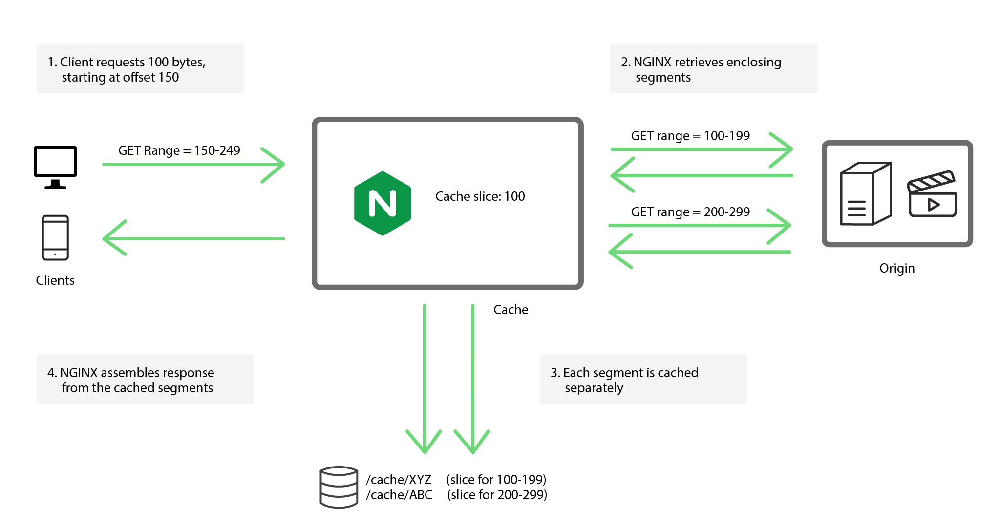
slice
proxy_cache_path /tmp/mycache keys_zone=mycache:10m;
server {
listen 80;
proxy_cache mycache;
slice 1m;
proxy_cache_key $host$uri$is_args$args$slice_range;
proxy_set_header Range $slice_range;
proxy_http_version 1.1;
proxy_cache_valid 200 206 1h;
location / {
proxy_pass http://origin:80;
}
}
Tips
Choose a slice size that's set to a value small enough that each segment can be transferred quickly (for example a second or two). This will reduce the chances of multiple requests trigging a continous-updating behavior
Cache Slice splits a resource into indepednent segments, it's not possible to cahnge the resouce once it has been cached. The module verifies the resouce's ETag header each time it receives a segment from the origin, and if the ETag changes, NGINX aborts the transaction because the underlying cache entry is now corrupt.
Only use cache slicing on large static files that won't changed once published like archived big images or video files
Splitting Across Disks
proxy_cache_path /path/to/hdd1 levels=1:2 keys_zone=my_cache_hdd1:10m
max_size=10g inactive=60m use_temp_path=off;
proxy_cache_path /path/to/hdd2 levels=1:2 keys_zone=my_cache_hdd2:10m
max_size=10g inactive=60m use_temp_path=off;
split_clients $request_uri $my_cache {
50% “my_cache_hdd1”;
50% “my_cache_hdd2”;
}
server {
...
location / {
proxy_cache $my_cache;
proxy_pass http://my_upstream;
}
}
Rather than build a RAID, and if you have mutliple hard disks, you can split the cache across the disks
In the above example we're splitting the clients evenly across two disks based on 50% of the requests
Lab 7.1: Split Across Directories
Create two cache directories to emulate hard disks
$ sudo mkdir -p /data/nginx/cache1 /data/nginx/cache2
Setup proxy_cache_path
Use split_clients
split_clients $request_uri $cache_dir {
50% "cache1";
* "cache2";
}
...
proxy_cache $cache_dir;
Run the following dynamic curl
$ for i in `seq 1 100` ; do curl -s -o /dev/null -w "%{http_code}" http://<ec2-hostname>/\?$i ; done
Run top
Full Solution:
proxy_cache_path /tmp/cache1 levels=1:2 keys_zone=cache1:20m inactive=5m;
proxy_cache_path /tmp/cache2 levels=1:2 keys_zone=cache2:20m inactive=5m;
plit_clients $request_uri $cache_dir {
50% "cache1";
* "cache2";
}
server {
...
location /{
proxy_cache $my_cache;
proxy_pass http://127.0.0.1:8080/;
}
}
Cache Clusters
High Cacpacity
Sharded Cache
"Hot" level Cache
High Availability:
Shared Cache
keepalived (VRRP)
All-Active GCE
No Shared Disk?
NGINX Plus is sensitive to disk latency, potentially overwhelmed by thread volumes, and requires cluster-wide locks that could result in overlapping cache operations
Before we get into the high availablity and caching cluster solutions, it's important to address the elephant in the room. We get a lot of questions about why NGINX Plus can't share a disk-based cache between multiple NGINX Plus nodes--and it's because it was a deliberate design choice
Storing a cache on a high‑latency, potentially unreliable shared filesystem is not a good design choice. NGINX Plus is sensitive to disk latency due to it operating as a single threaded event looping mechinism. Even though the thread pools capability can offload read() and write() operations from the main thread, when the filesystem is slow and cache I/O is high then NGINX Plus may become overwhelmed by large volumes of threads.
Maintaining a consistent, shared cache across NGINX Plus instances would also require cluster‑wide locks to synchronize overlapping cache operations such as fills, reads, and deletes. Finally, shared filesystems introduce a source of unreliability and unpredictable performance to caching, where reliability and consistent performance is paramount.
Sharded Cache
Primary Use Cases:
High Capacity—partitioned across multiple servers
High Performance—minimizes origin server load
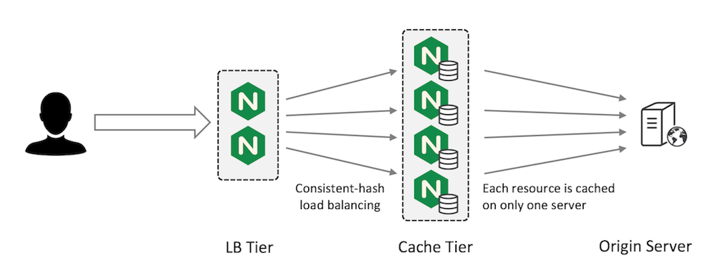
The way sharding works is the total cache capacity is the sum of the cache capacity of each server. This pattern reduces the backend trips to the origin server because only one server attempts to cache each resource (usually based on a proxy_cache_key set at the Load Balancing tier), this way you don't have multiple indepedent copies of the same resource on each caching servers.
Fault Tolerance Scenarios
One node fails, only 1/N cached data is 'lost'. New nodes automatically partition entries
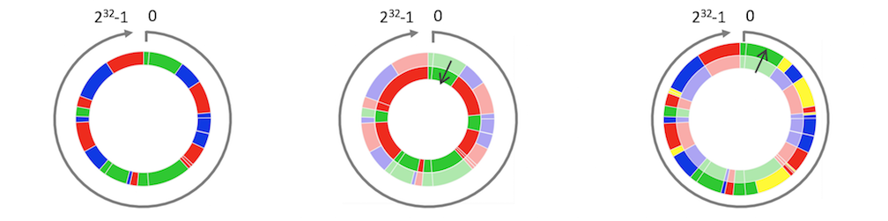
Cache sharding uses a consistent hashing algorithm to select the one cache server for each cache entry. The diagram shows what happens to a cache sharded across three servers (left figure) when either one server goes down (middle figure) or another server is added (right figure).
So diving deeper into this example we have the diagram on the left which displays each cache URL assigned by color: red, blue, or green servers according to hash value (proxy_cache_key). Let's say for example that the blue cache server fails, it's 1/3 of the share is distributed between the remaining red and green servers. Or, in another scenario, if an additional cache node is added to the caching upstream (the yellow partition), the new server takes 1/4 of the share from each of the currently working servers
Consistent Hashing
upstream cache-servers {
hash $scheme$proxy_host$request_uri consistent;
server cache-server1;
server cache-server2;
server cache-server3;
}
This approach is fault tolerant in the sense that if you have N cache servers and one fails, you lose only 1/N of your cache. This ‘lost portion’ is evenly distributed by the consistent hash across the remaining N –1 servers. Simpler hashing methods i.e. not using the 'consistent' parameter, would instead redistribute the entire cache across the remaining servers and you lose almost all of your cache during the redistribution--forcing the client to revalidate and make uneccsary backend trips
Combining LB and Cache Tiers
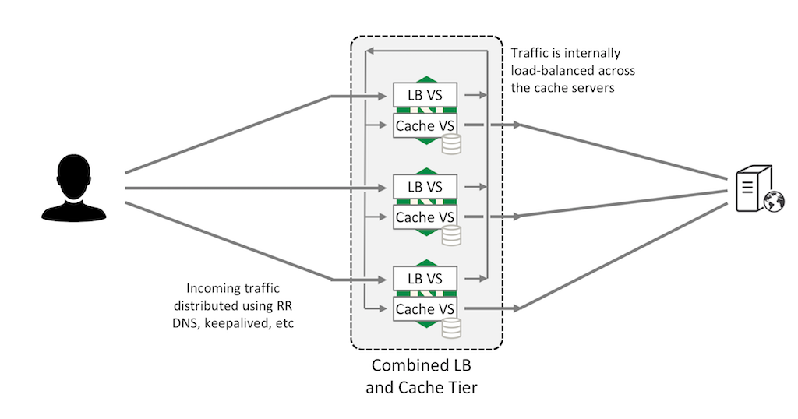
You can combine the LB and Cache tiers. In this configuration, two virtual servers run on each NGINX Plus instance. The load‑balancing virtual server (“LB VS” in the figure) accepts requests from external clients and uses a consistent hash to distribute them across all NGINX Plus instances in the cluster, which are connected by an internal network.
The caching virtual server (“Cache VS”) on each NGINX Plus instance listens on its internal IP address for its share of requests, forwarding them to the origin server and caching the responses. This allows all NGINX Plus instances to act as caching servers, maximizing your cache capacity.
"Hot" Cache
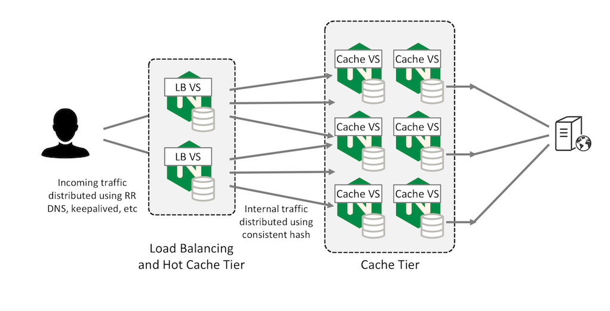
You can also configure a first‑level cache on the frontend LB tier for very hot (frequently accessed) content, using the large shared cache as a second‑level cache.
This can improve performance and reduce the impact on the origin server if a second‑level cache tier fails, because content only needs to be refreshed as the first‑tier cache content gradually expires. This approach compliments any simliar or object lifecycle policies you've inacted either in your cloud or local storage so that the client doesn't make uncessary requests for pieces of content.
Demo 7.1: Setting up the Cache Tier
Prerequisites
Load Balancer with NGINX Plus
Application Server (origin)
At least two NGINX Plus Cache Servers
Extended Status enabled to see the cache fill
Demo 7.2: Sharding the Cache
Enable consistent hash
Make dynamic requests to spread across nodes
Stop NGINX processes on one of the cache servers, note that server responses are still sent from the second cache
Sharding the Cache:
- Spinup a load balancer and an application instance in GCE
- Spinup two more load balancer instances (name them cache-servers)
- SSH into the cache server(s) and backup the lb.conf
- Create a new config called cache.conf
- Change the server IPs to map to the internal IP addresses
- Create directories to save the cached data
- Repeat same steps for second cache server
- SSH into the load-balancer instance
- Change the upstream name to cache-pool
- Change the IPs to map to the cache servers
- Change the zone directive to “cache-pool”
- Add hash $scheme$proxy_host$request_uri consistent;
- Change the status_zone cache-pool
- Change proxy_pass http://cache-pool/;
- Reload all instances (load balancer, cache servers)
- Open up the status dashboards for all 3 instances (LB, cache servers)
- Note that due to the health check, all requests that pass through the load balancer are being severed from the cache.
- Run a curl request against the external load balancer IP using -I flag e.g. curl -I http://104.196.241.243, you should see the cache status returning a hit, as well as displaying the origin server name “Application-Server”
-Run a wrk test: wrk -t12 -c400 -d30s http://104.196.241.243/
- Dynamic request: for i in `seq 1 100` ; do curl -s -o /dev/null -w "%{http_code}" http://104.196.241.243/\?$i ; done
- change {http_code} to {X-Cache-Status}
- log files
Make sure all 3 servers return X-Cache-Status
Create a shell script that sends 100 requests and prints number of different values X-Cache-Status
Kill one server (comment out virtual server block or rename .conf)
run script again
with consistent hash, 1/3 will be MISS and 2/3 will be HIT
then re-instate server
then rinse and repeat and get rid of the consistent parameter
run script again: 1/3 will be HIT and 2/3 will be MISS because keys are re-mapped
hash directive causing session persistence i.e. only one resource is cached on one server, so requests for that resource will go to that server.
CODE:
#lb.conf
upstream cache-pool {
hash $scheme$proxy_host$request_uri consistent;
server 10.138.0.4;
server 10.138.0.3;
zone cache-pool 64k;
sticky cookie GCPPersist expires=300;
}
…
status_zone cache-pool;
location / {
proxy_pass http://cache-pool/;
…
#cache.conf
proxy_cache_path /data/nginx/cache-blue keys_zone=blue_cache:10m levels=1:2 inactive=600s max_size=700m;
upstream upstream_app_pool {
server 10.138.0.2;
zone upstream-apps 64k;
sticky cookie GCPPersist expires=300;
}
server {
listen 80 default_server;
server_name _;
error_page 404 /404.html;
error_page 500 502 503 504 /50x.html;
error_log /var/log/nginx/lb-error.log notice;
proxy_cache_key $scheme$host$request_uri;
proxy_set_header Host $host;
proxy_set_header X-Real-Ip $remote_addr;
proxy_set_header X-Forwarded-For $proxy_add_x_forwarded_for;
proxy_set_header X-Forwarded-Proto $scheme;
location /50x.html {
root /usr/share/nginx/html;
}
status_zone blue_cache;
location / {
proxy_cache blue_cache;
proxy_cache_valid 5m;
proxy_pass http://upstream_app_pool/;
add_header X-Cache-Status $upstream_cache_status;
health_check;
proxy_http_version 1.1;
proxy_set_header Connection "";
}
location /images {
root /usr/share/nginx;
}
location ~ /favicon.ico {
root /usr/share/nginx/images;
}
location ~ /status-old.html {
root /usr/share/nginx/html;
}
}
High Availability Cache
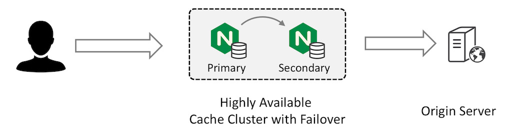
If minimizing the number of requests to your origin servers at all costs is your primary goal, then the cache sharding solution is not the best option. Instead, a solution with careful configuration of primary and secondary NGINX Plus instances can meet your requirements:
The primary NGINX Plus instance receives all traffic and forwards requests to the secondary instance. The secondary instance retrieves the content from the origin server and caches it; the primary instance also caches the response from the secondary and returns it to the client.
Both devices have fully populated caches and the cache is refreshed according to your configured timeouts.
Primary Cache
proxy_cache_path /tmp/mycache keys_zone=mycache:10m;
server {
status_zone mycache; # for NGINX Plus status dashboard
listen 80;
proxy_cache mycache;
proxy_cache_valid 200 15s;
location / {
proxy_pass http://secondary;
}
}
upstream secondary {
zone secondary 128k; # for NGINX Plus status dashboard
server 192.168.56.11; # secondary
server 192.168.56.12 backup; # origin
}
Configure the primary cache server to forward all requests to the secondary server and cache responses. As indicated by the backup parameter to the server directive in the upstream group, the primary server forwards requests directly to the origin server in the event that the secondary server fails:
Secondary Cache
proxy_cache_path /tmp/mycache keys_zone=mycache:10m;
server {
status_zone mycache; # for NGINX Plus status dashboard
listen 80;
proxy_cache mycache;
proxy_cache_valid 200 15s;
location / {
proxy_pass http://origin;
}
}
upstream origin {
zone origin 128k; # for NGINX Plus status dashboard
server 192.168.56.12; # origin
}
GCE HA Solution
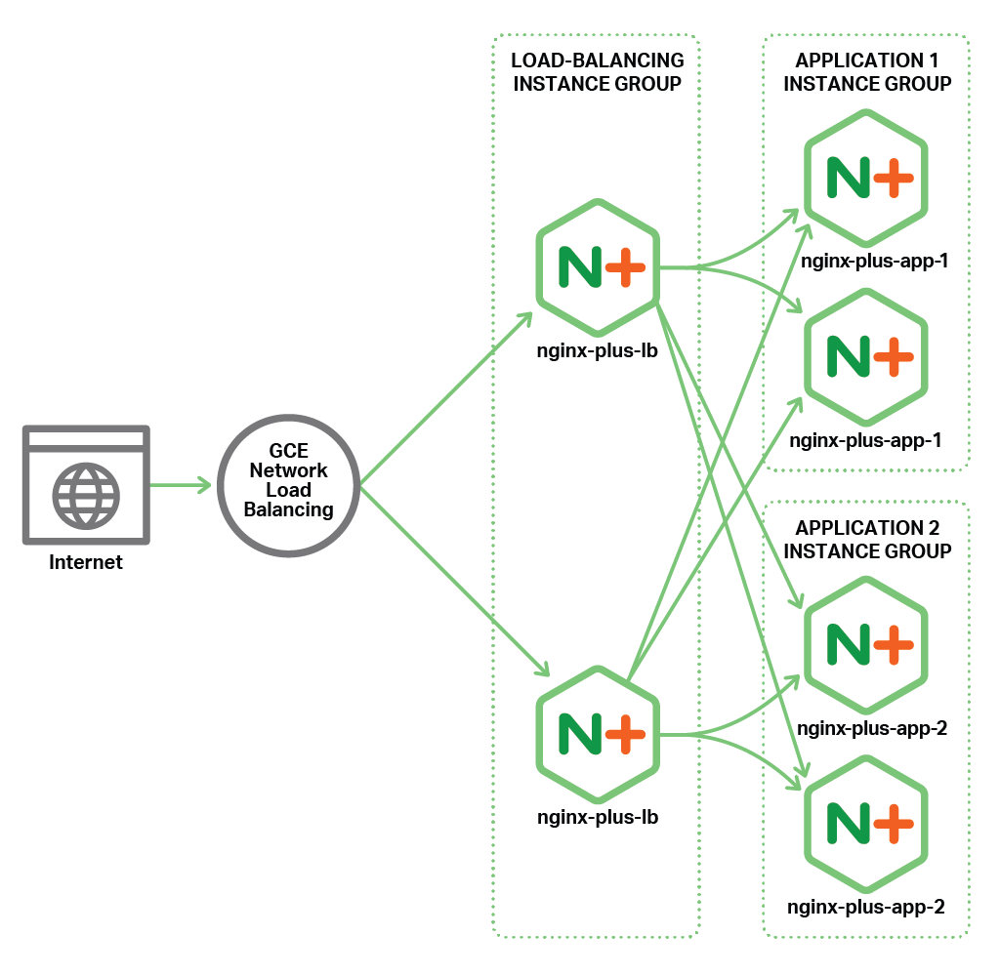
Advantages:
Detects changes
Active checking
Automatic recovery
In order for the HA cache to work, you must configure HA so that the secondary server takes the incoming traffic if the primary fails; and the primary takes the traffic back when it subsequently recovers.
If you're NGINX nodes are on prem you can use the keepalived VRRP solution, if you're using a hosting service like Google Cloud Engine, there is an admin guide on how to set this up yourself. Here is the diagram showing an all active load balancer that uses a GCE frontend load balancer to detect network changes at the NGINX Plus LB tier level. For example if one of these LB instances fails the GCE load balancer will detect the changes and load balance new requests to the other instance.
FULL STEPS:
Demo 8.1: HA Shared Cache
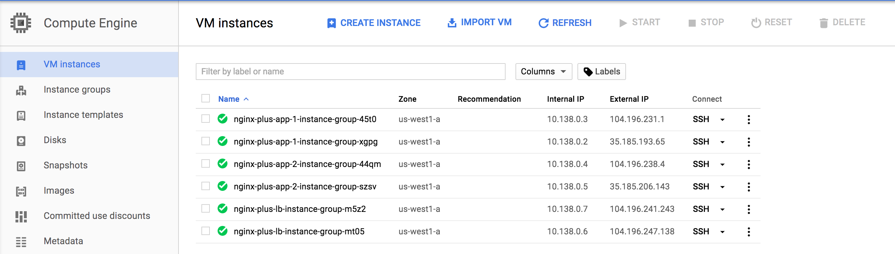
Tell the class we will take a break so you can set this up (especially the GCE frontend load balancer)
GCE Shared Cache Lab steps
1. Spin up an app instance group
2. Spin up a primary cache instance group (1 image)
3. Spin up a secondary cache instance group (1 image)
4. SSH into the primary cache instance;
- make the secondary server the primary
- make the app server the backup
- check primary.conf and secondary.conf for examples
5. Save and reload
6. Edit the Fronted GCE LB as needed.
6. Run the following command for testing
$ while sleep 1 ; do curl http://104.196.239.36/test/ ; done
6. Mark the secondary server as “down” in the primary conf, notice how the requests still populate in the running command.
7. stop the primary instance in GCE, the network load balancer will take a minute to detect the change, but after one or two failed connections will begin serving responses from the backup server’s cache fill.
Failover Scenenarios
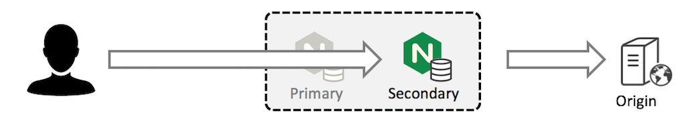
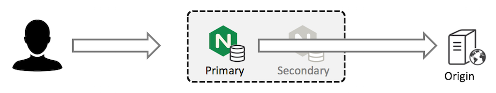
Demo 8.2: Testing Failover
Configure origin server
access_log /var/log/nginx/access.log;
location / {
return 200 "It's now $time_local\n";
}
Configure cache validation
proxy_cache_valid 200 15s;
Verify cache behavor
$ while sleep 1 ; do curl http://<external frontend lb ip>/ ; done
Verfiy failover behavior (2nd scenario)
$ nginx -s stop
# Inspect log on origin server
tail -f /var/log/nginx/access.log
To test our HA solution, we configure the origin server to log requests and to return the current time for each request. This means that the origin server’s response changes every second:
The primary and secondary cache servers are already configured to cache responses with status code 200 for 15 seconds. This typically results in cache updates every 15 or 16 seconds.
Once per second, we send an HTTP request to the highly available virtual IP address for the cache cluster. The response does not change until the caches on the primary and secondary servers expire and the response is refreshed from the origin server. This happens every 15 or 16 seconds.We can also inspect the logs on the origin server to confirm that it is receiving a request only every 15 or 16 seconds.
We can verify that the failover is working correctly by stopping either the primary or the secondary server, for example, by stopping the nginx processes. The constant‑load test continues to run, and the response is consistently cached.
Inspecting the access log on the origin server confirms that it only ever receives a request every 15 to 16 seconds, no matter which of the cache servers fails or recovers.
Timing Cache Updates
expires
In a stable situation, the cached content is normally updated every 15 to 16 seconds. The content expires after 15 seconds, and there is a delay of up to 1 second before the next request is received, causing a cache update.
Sometimes, the cache will appear to update slowly (up to 30 seconds between changes in content). This can happen if the primary cache server’s content expires and the primary retrieves cached content that is 'almost' expired from the secondary server. To fix this potential problem, you can always try and configure a shorter cache timeout on the secondary server.
nginx-sync Share configurations in an HA cluster
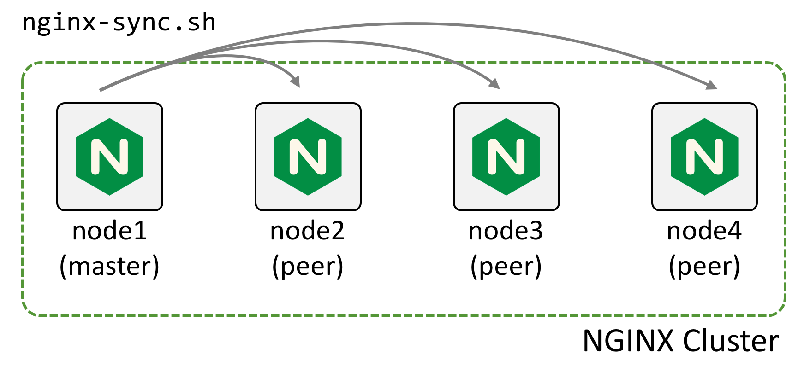